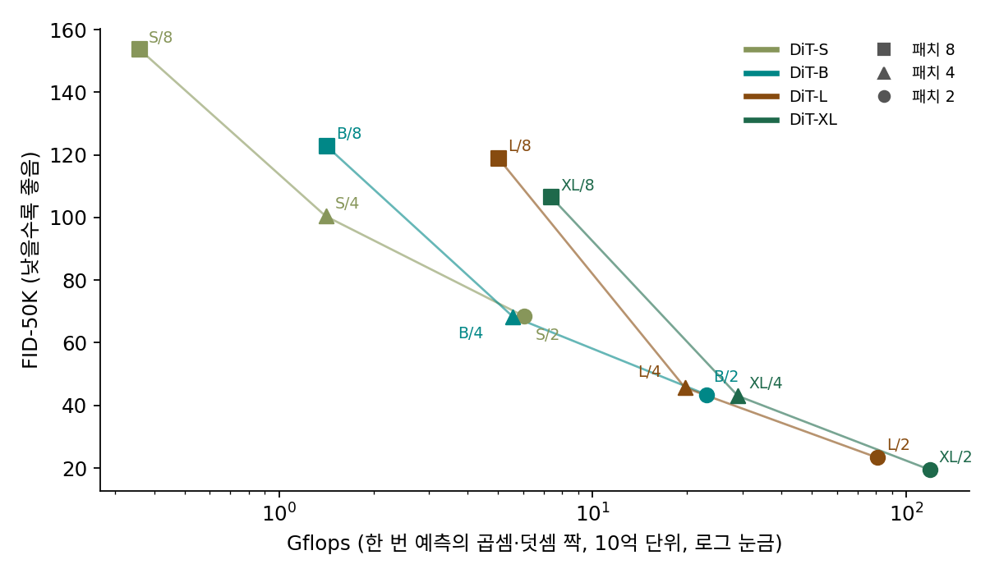

12장 — 디퓨전 트랜스포머: U-Net 자리에 트랜스포머를
규모: 무엇을 키우면 그림이 좋아지나
U-Net 을 키우는 손잡이는 많았다. 단계 수, 단계마다의 채널, 블록 수, 어텐션 블록을 어느 해상도에 몇 개 둘지. 어느 것을 얼마나 돌려야 하는지 정해진 답이 없어 모델마다 다르게 정했다. 트랜스포머로 바꾸면 손잡이가 셋으로 준다. 블록 수(깊이), 토큰 벡터의 폭, 토큰 수(패치 한 변)다. 그렇다면 이 셋을 돌릴 때 그림 품질은 어떻게 바뀔까? 매개변수를 늘리면 좋아질까, 계산을 늘리면 좋아질까?
역사: 열두 모델을 한 그래프에
피블스와 셰는 깊이와 폭을 함께 키운 네 설정(S, B, L, XL: 블록 12·12·24·28개, 폭 384·768·1024·1152)에 패치 한 변 8, 4, 2를 곱해 열두 모델을 만들고 모두 40만 걸음씩 학습했다. 같은 설정에서 패치만 작게 하면 매개변수는 그대로인데(XL 은 6억 7,600만 → 6억 7,500만 → 6억 7,500만) FID 가 106.41 → 43.01 → 19.47로 좋아졌다. 반대로 패치를 그대로 두고 설정을 키워도 좋아졌다. 열두 모델의 FID 를 한 번 예측에 드는 곱셈·덧셈 짝의 수(Gflops, 10억 단위)에 대해 그리자 한 줄 위에 모였다. 논문은 「모델의 Gflops 와 FID 사이에 강한 음의 상관이 있다」며, 매개변수 수가 아니라 계산량이 품질을 정한다고 적었다. DiT-S/2 와 DiT-B/4 처럼 매개변수는 네 배 다르지만 Gflops 가 비슷한 두 모델(6.06, 5.56)은 FID 도 비슷했다(68.40, 68.38).

SD3 논문은 이 생각을 한 손잡이로 줄였다. 블록 수를 L 이라 할 때 폭을 64L, 머리 수를 L 로 두어 깊이 하나만 돌렸다(논문은 깊이를 d 로 적었다). 깊이 15에서 38까지 키운 모델들의 검증 손실이 크기와 학습 걸음을 따라 고르게 내려갔고, 논문은 「그림에서도 영상에서도 포화의 기미가 보이지 않는다」고 적었다. 깊이 38인 가장 큰 모델은 매개변수 80억 개였다.
블록 하나의 무게: 18d²
계산량이 품질을 정한다면, 설정을 보고 계산량을 어림할 수 있어야 한다. 0에서 시작하는 adaLN 블록 하나의 매개변수를 폭 d로 세어 보자. 질의·열쇠·값·출력 행렬이 d × d짜리 넷이라 4d², MLP 는 d → 4d → d라 8d², 변조 층은 6d²다(치우침과 정규화는 d에 비례해 작으니 뺀다).
DiT-XL 이면 18 × 1152² × 28 = 6억 6,890만 개로, 논문의 6억 7,500만 개와 1% 안쪽에서 맞는다. 계산은 곱셈 한 번과 덧셈 한 번을 한 짝으로 센다. 행렬 곱에서는 매개변수 하나마다 토큰 하나당 짝이 하나이니, 토큰 하나가 블록 몸통을 지날 때 12d²L 짝이 든다. 변조 층의 6d²는 여기 들지 않는다. 변조 층은 토큰이 아니라 그림 한 장의 조건 벡터에 한 번만 곱하기 때문이다. 여기에 어텐션이 쌍마다 질의·열쇠를 견주고 값을 섞는 몫, 층마다 2N²d 짝이 더해진다. DiT-XL/2(토큰 256개)에 넣으면 행렬 곱 1,141억 짝, 어텐션 42억 짝, 합 1,184억 짝이다. 논문이 적은 118.64 Gflops 와 맞는다. 논문의 Gflops 도 곱셈·덧셈 짝을 10억 단위로 센 것이다. 폭을 두 배로 하면 4배, 깊이를 두 배로 하면 2배, 패치 한 변을 절반으로 하면 토큰이 4배라 4배(어텐션 몫은 16배)가 된다. 계산을 키우는 손잡이 셋이 모두 이 식 하나에 들어 있다. 이렇게 센, 그림 한 장을 한 번 예측하는 데 드는 곱셈·덧셈 짝의 수를 이 책에서는 연산량 (한 번 예측에 드는 계산의 양 / FLOPs)이라 부른다.
ML에서: 키우는 것 말고 학습을 바꾸기
계산을 늘리지 않고 같은 몸통을 더 빨리 배우게 하는 길도 있다. 잡음 제거 손실만으로는 몸통 안에 그림의 뜻을 잘 담은 표현이 늦게 생긴다는 관찰에서, 2024년의 REPA 는 몸통 안 토큰의 은닉 상태가 미리 학습된 바깥 그림 인코더의 특징과 닮도록 하는 손실 한 줄을 더해 학습을 크게 앞당겼다. Black Forest Labs 의 셰퍼(Hila Chefer)·에서와 동료들은 2026년의 Self-Flow 에서 바깥 인코더 없이 같은 효과를 노렸다. 토큰마다 잡음 수준을 다르게 주어(그들은 「이중 시간 일정」이라 불렀다) 덜 가려진 토큰에서 더 가려진 토큰의 내용을 짐작하게 만들고, 그 짐작을 학습 목표로 올렸다. 셀프 어텐션이 몸통 안에서 해 주기를 바라던 「이미 그린 부분을 읽고 나머지를 맞추는 일」을 손실이 직접 요구하게 한 것이다. 논문은 그림·영상·소리에서 모두 더 좋은 생성을 보고했다.
문제 12. 18d² 로 어림하기
(가) 18d²L 로 DiT-S(블록 12, 폭 384), DiT-B(12, 768), DiT-L(24, 1024)의 매개변수를 어림하고 논문의 3,300만, 1억 3,000만, 4억 5,800만과 견주라. (나) DiT-XL/2 를 512 × 512 그림에 쓰면 잠재 그림이 64 × 64, 토큰이 1,024개다. 연산량을 어림하고, 논문 표의 524.60 Gflops 와 견주라. 256 × 256(118.64 Gflops)의 4배가 아닌 까닭은? (다) 매개변수를 하나도 늘리지 않고 256 × 256 그림의 연산량을 (나)만큼 키우려면 어느 손잡이를 어떻게 돌리면 되는가?
위젯 3 에서 DiT-XL/2 단추를 누른 뒤 잠재 그림 한 변이나 패치 한 변을 바꾸면, 풀이를 마친 뒤 행렬 곱과 어텐션 쌍의 몫을 견주어 볼 수 있다.

(가)는 3,190만, 1억 2,740만, 4억 5,300만이요. 다 조금씩 모자라는데 1~4% 안이에요.

모자란 몫은 패치를 옮기는 층, 시간·라벨 임베딩, 마지막 층이겠다. 작은 모델일수록 그 몫이 커서 S 가 4% 가까이 모자라고.

(나)는요?

토큰이 4배니까 118.64 × 4 = 474.56 Gflops 요. 논문은 524.60이니까 50쯤 차이 나는데, 마지막 층 같은 게 더 붙은 걸까요?

마지막 층은 256 × 256에서도 있었어. 4배로 안 맞는 건 토큰 수에 비례하지 않는 몫이 있다는 거야. 어텐션 쌍은 토큰 수의 제곱이잖아.

아, 나눠서 세면 되네요. 행렬 곱은 12 × 1152² × 28 × 1,024 = 4,566억 짝, 어텐션은 2 × 1,024² × 1152 × 28 = 676억 짝, 합해서 5,242억 짝이라 524.2 Gflops 요. 논문이랑 맞아요. 256 × 256에서는 어텐션이 3.6%였는데 여기서는 12.9%로 커졌고요.
그럼 (다)는요? 깊이나 폭을 돌리면 매개변수가 늘어나죠.

남는 건 패치 한 변이에요. 256 × 256 그림에서 패치를 2에서 1로 줄이면 토큰이 256개에서 1,024개가 되니까, (나)와 똑같이 524 Gflops 쯤이에요. 패치를 옮기는 층만 조금 줄 뿐 매개변수는 거의 그대로고요.

그래요. 매개변수와 연산량이 같이 움직이지 않는 자리가 둘이에요. 패치 한 변은 연산량만, 변조 층은 매개변수만 움직여요. DiT 의 열두 모델이 매개변수가 아니라 연산량을 따라 한 줄에 선 것도 그 때문이에요.

학원 강사 수는 같은데 수업 시간만 늘리는 거네요. 교재 제작비는 그대로고요.
문제 13. SD3 의 80억
SD3 의 MM-DiT 는 블록 수 L 에서 폭 64L, 머리 L 개다. 블록 하나는 글 줄과 그림 줄이 저마다 0에서 시작하는 adaLN 블록 한 벌을 갖는다. (가) 블록 하나의 매개변수를 폭으로 어림하라. (나) 깊이 15, 24, 38인 모델의 몸통 매개변수는? 깊이 38을 논문의 「80억」과 견주라. (다) 깊이 24 모델에서 1024 × 1024 그림(그림 토큰 4,096개)을 한 번 예측할 때 그림 토큰이 행렬 곱에 쓰는 연산량을 어림하라.
(가) 한 벌이 18d² 니까 두 벌이면 36d² 요.
(나) 깊이 15는 폭 960이라 36 × 960² × 15 = 4억 9,770만, 24는 폭 1536이라 20억 3,800만, 38은 폭 2432라 80억 9,000만 개요. 80억이랑 거의 같아요.

깊이를 2.5배 늘렸는데 매개변수는 16배네. 폭도 같이 커지니까 깊이의 세제곱으로 늘어.
(다)는 어떻게 세죠? 36d² 를 다 넣으면 될까요?
36 × 1536² × 24 × 4096이요?
토큰 하나는 자기 줄의 가중치만 지나. 그림 토큰은 그림 쪽 한 벌만. 그리고 변조 층은 토큰마다 안 걸리니까 그림 토큰 하나는 층마다 12d² 짝만 지나는 거야. 12 × 1536² × 24 × 4096 = 2조 7,830억 짝, 곧 2,783 Gflops 쯤이고, 여기에 글 토큰 몫과 어텐션 쌍이 더해져.
그래요. 같은 「36d²」라도 매개변수를 세는 것과 토큰 하나가 지나는 길을 세는 것은 달라요. 두 줄 블록은 매개변수는 두 배인데 토큰마다의 계산은 한 줄 블록과 같다는 것, 앞에서 FLUX.1 블록을 셀 때와 같은 이야기예요.

회사에 부서가 둘이면 직원 수는 두 배지만, 서류 한 장은 자기 부서 한 곳만 거치는 거네요.